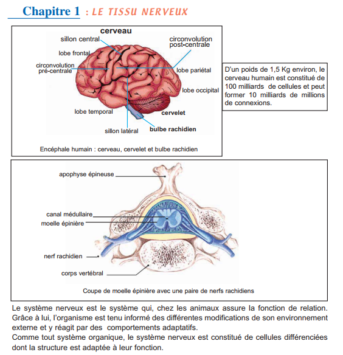
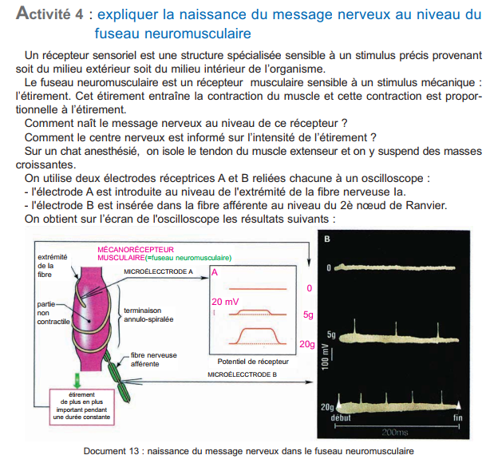
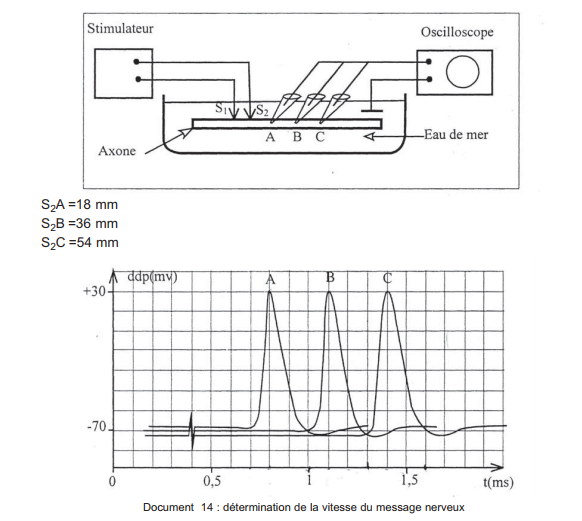
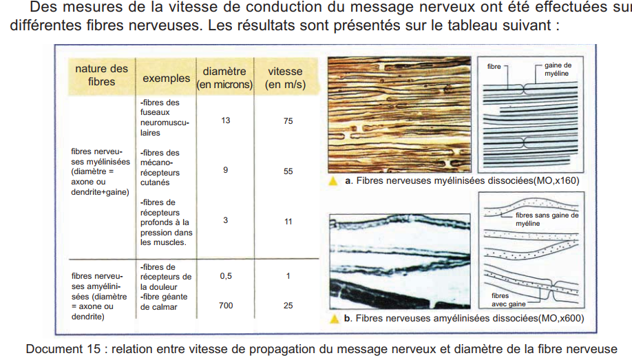
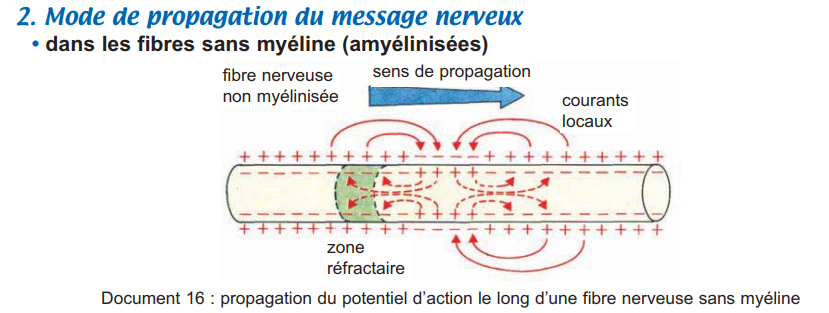
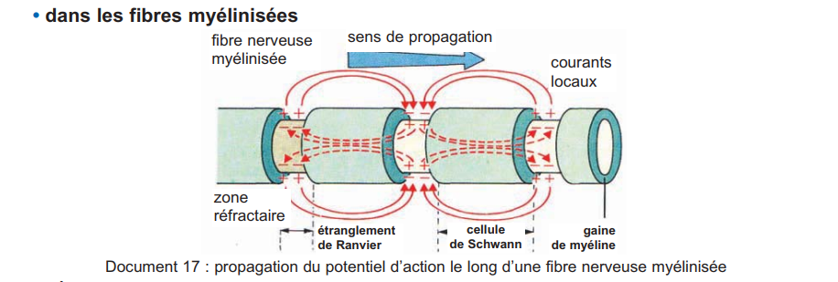
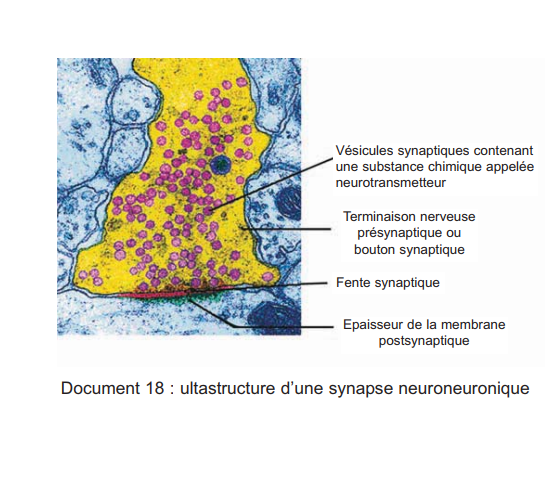

Le système nerveux est le système de communication rapide de l'organisme. Cette fiche couvre ses bases structurales (Ch.1) et la genèse, propagation et transmission du message nerveux dans le contexte du réflexe myotatique (Ch.2).
📚 Chapitres couverts
Ch.1 : Le tissu nerveux (pp.162–173)
Ch.2 : Le réflexe myotatique (pp.174–207)
🎯 Objectifs globaux
Structure du neurone et du tissu nerveux
Potentiel de repos et potentiel d'action
Propagation et transmission synaptique
Circuit du réflexe myotatique
🔑 Concepts clés
Neurone, axone, myéline, synapse
PA — loi du tout ou rien
PPSE / PPSI, intégration postsynaptique
Réflexe monosynaptique / innervation réciproque
🗺️ Plan de la fiche
🧠 Tissu nerveux
→
⚡ Message nerveux
→
🔗 Synapse
→
🔄 Réflexe
→
📋 BILAN
→
✅ QCM
💡 Méthode : Parcours les onglets Ch.1 → Ch.2 → BILAN, puis teste tes acquis avec le QCM CAPES.
I. Organisation générale du système nerveux (pp.162-164)
🖼️
Doc 00 — Introduction au système nerveux
Manuel p.161
Centres nerveux et nerfs — SNC + SNP

🖼️
Doc 01 — Organisation SN de l'Homme
Manuel p.164 (Doc 1)
Schéma annoté : encéphale, moelle épinière, nerfs crâniens et rachidiens
Chez l'Homme, le système nerveux comprend le SNC (encéphale + moelle épinière) et le SNP (nerfs). Les centres nerveux sont formés de deux substances : la substance
(corps cellulaires + cellules gliales) et la substance
(fibres nerveuses = axones myélinisés). Le
est l'unité de base du tissu nerveux. Son corps cellulaire est toujours situé dans la
.
Il possède des prolongements ramifiés : les
(réception) et un prolongement long : l'
(conduction). Dans les nerfs, les fibres sont entourées d'une gaine de
(cellule avec noyau). Les fibres myélinisées possèdent en plus une gaine de
(lipidique, isolante). Les neurones communiquent au niveau des
.
La jonction neurone-muscle est la
.
I. Le réflexe myotatique — Définition et éléments (pp.174-176)
Le réflexe myotatique est une contraction involontaire d'un muscle en réponse à son propre étirement. Rôle : maintien de la posture et tonus musculaire.
🖼️
Doc 01 — Fuseau neuromusculaire (MO x800)
Manuel p.176 (Doc 1)
Fibres intrafusales + terminaison annulo-spiralée des fibres Ia
Après un PA, fibre inexcitable quelques ms. Canaux Na⁺ fermés momentanément. Propagation unidirectionnelle.
IV. Codage et naissance du message (p.184)
🖼️
Doc 13 — Naissance du message dans le fuseau
Manuel p.184 (Doc 13)
Électrodes A & B + masses croissantes → potentiel récepteur → PA codés en fréquence

Transduction sensorielle : Stimulus → potentiel de récepteur (amplitude ∝ intensité) → si ≥ seuil → train de PA codés en modulation de fréquence (↑intensité = ↑fréquence).
V. Propagation du message nerveux (pp.185-186)
🖼️
Doc 14 — Vitesse de propagation
Manuel p.185 (Doc 14)
Montage RA, RB, RC — distances S2A/B/C

🖼️
Doc 15 — Tableau vitesse / diamètre
Manuel p.186 (Doc 15)
Myélinisées vs amyélinisées : relation diamètre-vitesse

🖼️
Doc 16 — Propagation fibre amyélinisée
Manuel p.186 (Doc 16)
Continue : courants locaux de proche en proche

🖼️
Doc 17 — Propagation saltatoire (myélinisée)
Manuel p.186 (Doc 17)
Le PA « saute » de nœud de Ranvier en nœud de Ranvier

Fibre amyélinisée
Propagation continue
Courants locaux
0,5 → 2 m/s
Fibre myélinisée
Propagation saltatoire
Nœuds de Ranvier
30 → 120 m/s
Règle générale
↑ diamètre = ↑ vitesse
Myélinisée > Amyélinisée
< 300 000 km/s (courant électrique)
VI. Transmission synaptique (pp.187-191)
🖼️
Doc 18 — Ultrastructure synapse
Manuel p.187 (Doc 18)
ME : vésicules synaptiques, fente, membrane postsynaptique épaissie

🖼️
Doc 19 — Synapse : repos vs activée
Manuel p.187 (Doc 19)
Fig. A (repos) / Fig. B (après PA) : exocytose des vésicules
Innervation réciproque : Contraction du muscle étiré + relâchement simultané du muscle antagoniste.
Tonus musculaire
Au repos, activité permanente de faible intensité des fuseaux → légère contraction de base = tonus musculaire.
📝 Activité — Le message nerveux & le réflexe
2
Potentiel d'action, synapse & réflexe myotatique
Ch.2 — Synthèse pp.194-201
Une stimulation ≥ seuil déclenche un
.
La dépolarisation est due à l'entrée de
,
la repolarisation à la sortie de
.
Le PA obéit à la loi du
.
La période
assure la propagation unidirectionnelle. Dans une fibre myélinisée, la propagation est
.
Le message est codé en
.
Au niveau de la synapse, le PA présynaptique déclenche l'entrée de
,
provoquant l'exocytose des vésicules et la libération du
.
Une synapse excitatrice génère un
(entrée Na⁺),
une synapse inhibitrice un
(entrée Cl⁻).
Le réflexe myotatique est un réflexe
.
Le récepteur est le
.
Le circuit excitateur est
,
le circuit inhibiteur est
.
Cette coordination s'appelle
.
📋 BILAN — Synthèses du manuel (pp.170-171 & 194-201)
🧠 Synthèse Ch.1 — Le tissu nerveux
Le système nerveux comprend le SNC (encéphale + moelle épinière) et le SNP (nerfs). La substance
contient les corps cellulaires, la substance
les axones myélinisés. Le
est l'unité de base : corps cellulaire dans la
,
dendrites (réception), axone (conduction). La gaine de
entoure les fibres, avec ou sans gaine de
.
Les neurones communiquent via les
.
La jonction neurone-muscle est la
.
⚡ Synthèse Ch.2 — Message nerveux & Réflexe
Le PR (−70 mV) est maintenu par la
.
Le PA comporte : dépolarisation (entrée
),
repolarisation (sortie
).
Loi du
:
amplitude fixe ~100 mV. Période
→ unidirectionnelle. Propagation
dans les fibres myélinisées. Le message est codé en
.
À la synapse, l'entrée de
déclenche l'exocytose du
.
PPSE = entrée Na⁺ (dépolarisation), PPSI = entrée
(hyperpolarisation). L'intégration se fait au
.
Le réflexe myotatique est
.
Le récepteur est le fuseau neuromusculaire. Le circuit excitateur est
,
le circuit inhibiteur est
.
Cette coordination est l'
.
Le tonus musculaire est maintenu par l'activité permanente des fuseaux.
✅ 15 Questions QCM — Style CAPES
Chaque question peut avoir une ou plusieurs réponses correctes.
⚠️ Utilise Vérifier pour savoir si ta réponse est juste, puis Correction pour afficher l'explication complète.